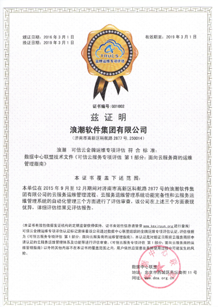

浪潮荣获首批可信云金牌运维认证
3月11日，由工业和信息化部信息通信发展司指导，中国信息通信研究院主办，数据中心联盟和云计算发展与政策论坛承办的“可信云服务第五次情况通报会”在京召开。会上发布了可信云服务第五批认证结果，披露了可信云云主机可用性和性能监测、可信云金牌运维、企业级SaaS和云保险等项目的最新进展。

工业和信息化部信息通信发展司谢雨琦在致辞中表示，作为战略性新兴产业，云计算正向着更加稳健、务实的方向迈进。目前，工信部正在从三个方面大力推进云计算发展：一是推动云计算信任体系的建立；二是引导和优化云计算基础设施布局；三是推进云计算在各领域的应用示范。
数据中心联盟常务副理事长何宝宏在会上公布了第五批可信云服务认证结果。在72家云服务商提交的87项云服务中，共有30项云服务通过了第五批可信云认证，通过率为35%，较前四批又有所下降。何宝宏表示：“可信云服务认证致力于推动我国云服务信用体系的建设，促进市场的良性发展。第五批认证通过率仅为35%，是可信云服务认证坚持严格认证标准的结果。在已经通过认证的130项目云服务中，92%的云服务通过了可信云服务认证年检，未通过年检的云服务则是受到退出市场和转型等因素的影响。截至目前，共有61家云服务商的122个云服务拥有可信云认证。”
会上首次披露了可信云金牌运维评估结果，浪潮、华为、中国移动、腾讯云四家企业通过评估。作为可信云服务认证推出的全新评估项目，可信云金牌运维比可信云更加严苛，是可信基础上服务商进一步能力分类的依据，为重视服务商运维能力的政企客户选择云服务商提供支撑。评估重点认证云服务企业的运维完备性、规范性和自动化水平，旨在引导云服务商建立完善、健全的运维管理体系，为企业提高运行效率和服务质量提供有效指导，提升企业的核心竞争力。
- 新闻链接
- 动态新闻相关了解更多...